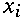
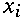
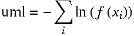

to be the height of the
ith bin
to be the height of the
ith bin
 to be the center of the ith bin
 the function's value
at the ith bin
the function's value
at the ith bin
 the error on the ith
bin
the error on the ith
bin
The fit methods are divided in binned and unbinned fit methods depending on weather they apply to the bins or to the content of a given distribution; so a fit to an histogram will be performed with a binned fit method, while a fit to a column of a tuple will be unbinned.
Given a function f and a binned distribution we define:
 to be the center of the ith bin
With the above we define the following fit methods, where the sums are performed over all the bins:
Given a probability distribution function f and a set of data we define the following unbinned fit method:
